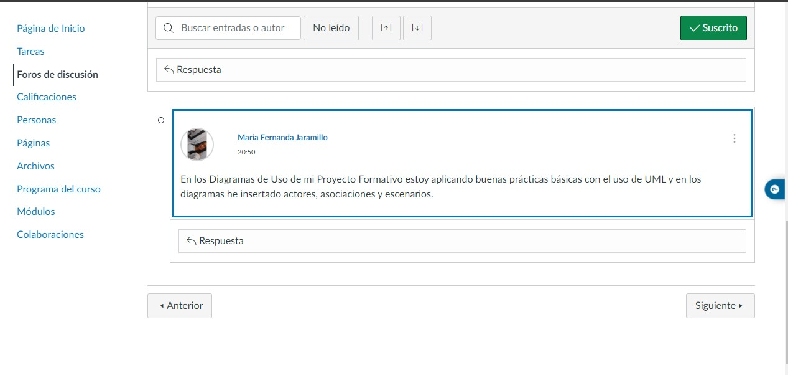
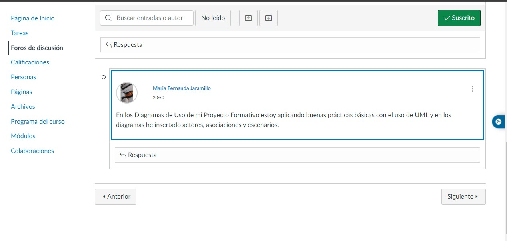

Los casos de uso en el desarrollo de software son representaciones estructuradas de interacciones entre usuarios y un sistema informático, utilizadas para capturar requisitos funcionales. Cada caso de uso describe un escenario específico de cómo un actor interactúa con el sistema para lograr un objetivo particular. Estos escenarios se centran en las acciones que el usuario realiza y las respuestas del sistema. Los casos de uso son una herramienta crucial en la ingeniería de requisitos, ya que proporcionan una comprensión detallada de las necesidades de los usuarios y sirven como base para el diseño, desarrollo y prueba del software. Además, facilitan la comunicación entre los distintos stakeholders y ayudan a garantizar que el sistema cumpla con las expectativas y requisitos de los usuarios finales.
La ingeniería de requisitos es el proceso de comprender, documentar y validar lo que un sistema de software debe hacer. Implica identificar, analizar y especificar las necesidades de los usuarios y las características del sistema. Este proceso es esencial para garantizar que el software desarrollado satisfaga las expectativas y requisitos de los clientes y usuarios finales. Incluye actividades como la recolección de requisitos, la elaboración de documentación detallada, la validación continua con los stakeholders y la gestión de cambios en los requisitos a lo largo del ciclo de vida del desarrollo del software. En resumen, la ingeniería de requisitos es fundamental para el éxito de cualquier proyecto de software, ya que establece la base sobre la cual se construye todo el sistema.
UML 2.5 es un lenguaje estándar utilizado en el desarrollo de software para visualizar, especificar, construir y documentar los artefactos de un sistema. Proporciona un conjunto de diagramas y notaciones que permiten a los desarrolladores representar visualmente diferentes aspectos de un sistema, como su estructura, comportamiento, interacciones y arquitectura. UML 2.5 incluye varios tipos de diagramas, como diagramas de clases, de secuencia, de actividad y de casos de uso, entre otros, cada uno de los cuales se utiliza para modelar aspectos específicos del sistema. Este estándar promueve la comunicación efectiva entre los miembros del equipo, ayuda a comprender y visualizar la complejidad del sistema, y facilita el diseño y desarrollo de software de alta calidad.